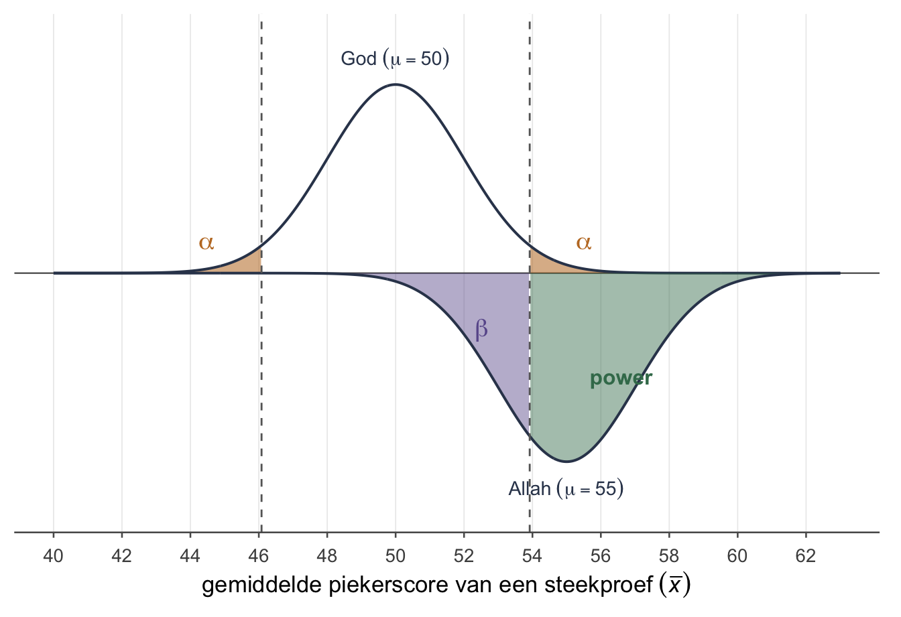
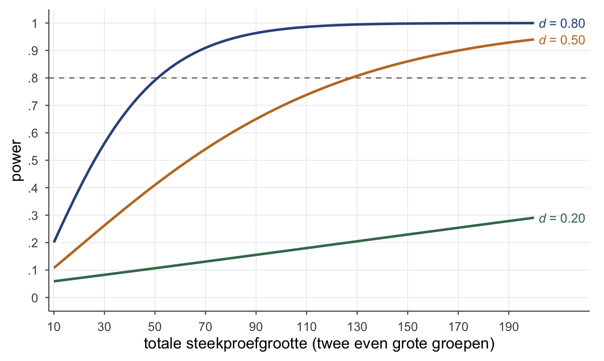
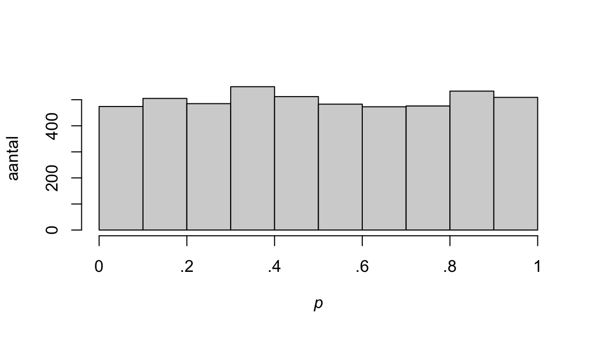
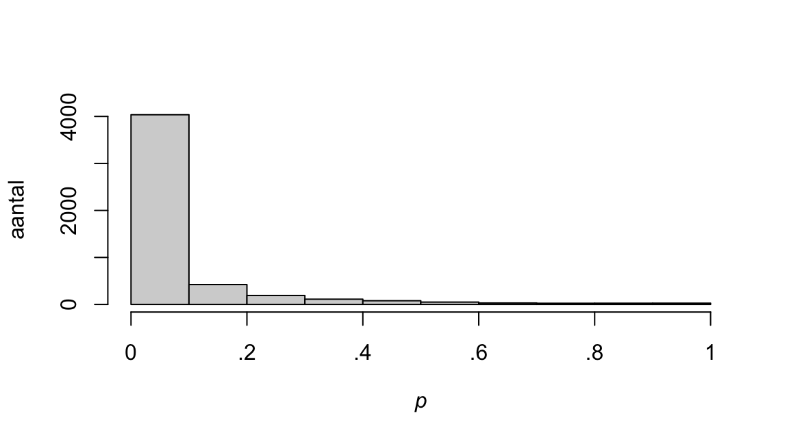

hoe groot is het verschil, en had je het kunnen zien?
“Het piekeren is significant gedaald,” schreef de vleermuis trots in zijn verslag over de slaaptraining.
“Een beetje, of veel?” vroeg de zevenslaper.
Dat wist de vleermuis niet, dus begon hij maar over power: “Jung schreef: waar de liefde heerst, is geen wil tot macht.”
“Dat is een andere power,” zei de zevenslaper, “en ik vroeg: een beetje, of veel?”
Wat je deze week leert
waarom een p-waarde niet zegt hoe groot een verschil is
Cohens d: een verschil uitgedrukt in standaarddeviaties
η²: welk deel van de verschillen bij de groep hoort
φ en Cramérs V: de effectmaat naast χ²
wanneer een effect klein, middelgroot of groot heet
power: de kans dat je een echt verschil ook ziet
in R effectmaten uitrekenen
Significant is niet hetzelfde als groot
Vier weken lang stelde je één vraag: is er een verschil? Een toets geeft daarop een p-waarde, en een beslissing. Deze week komt er een tweede vraag bij, en die is minstens zo belangrijk: hoe groot is dat verschil?
In gewoon Nederlands klinkt significant als belangrijk. In de statistiek betekent het iets bescheideners. Lees significant als: vrij zeker. Je bent er vrij zeker van dat er in de populatie een verschil is. Of dat verschil groot is, of belangrijk, zegt het woord niet. In vaktaal staat statistische significantie (wat de toets zegt) tegenover praktische significantie (groot of belangrijk).
Dat zie je het best als je hetzelfde verschil bij steeds meer mensen toetst. Stel: slechte slapers scoren 2 punten hoger op de piekervragenlijst dan de algemene bevolking, waar het gemiddelde 50 is en de standaarddeviatie 10. Dat verschil blijft 2 punten. Alleen de steekproef groeit.
Hetzelfde verschil van 2 punten, bij drie steekproefgroottes (z-toets, = 10)
aantal mensen (n)
standaardfout
z
p
25
2.00
1.00
.32
100
1.00
2.00
.046
400
0.50
4.00
< .001
Bij 25 mensen is het verschil niet significant, bij 400 mensen ruim. Het verschil zelf veranderde niet. Wat veranderde is hoe zeker je ervan bent: een grotere steekproef geeft een kleinere standaardfout, en dus een grotere z en een kleinere p. Met genoeg mensen wordt elk verschil significant, hoe klein ook.
Een p-waarde mengt dus twee dingen: hoe groot het verschil is, en hoeveel mensen je hebt. Achteraf kun je die twee er niet meer uit halen. Daarom zet je er een getal naast dat alleen over de grootte gaat: de effectmaat.
Zo krijg je een keten van drie:
het effect: het verschil zelf, in de eenheden van je meting (hier 2 punten);
de toets: hoe zeker je bent dat het er is (de p-waarde, de beslissing);
de effectmaat: hoe groot het is, op een schaal die niet afhangt van je meetlat of van je n.
Waarom niet gewoon die 2 punten? Omdat ruw ruk is. Is 2 punten veel? Op een vragenlijst waar iedereen tussen de 48 en 52 scoort wel; op een lijst die van 0 tot 200 loopt niet. Een ruw verschil kun je pas wegen als je weet hoeveel mensen gewoonlijk van elkaar verschillen. Daarom zijn de effectmaten van deze week relatief, of gestandaardiseerd: ze zetten het verschil af tegen de spreiding.
In vaktaal heten de eerste en de derde schakel van die keten allebei een effectgrootte (effect size). Het effect zelf, die 2 punten, is de absolute of ongestandaardiseerde effectgrootte. Een effectmaat is de relatieve effectgrootte.
Cohens d: hoe vaak past de standaarddeviatie ertussen?
De bekendste effectmaat deelt het verschil door een standaarddeviatie.
OpmerkingCohens d
Hoeveel standaarddeviaties liggen de twee gemiddelden uit elkaar? De streepjes eromheen maken het getal positief: d zegt hoe groot, niet welke kant op. De richting zeg je er in woorden bij.
Die streepjes heten de absolute waarde. Dat is een ander “absoluut” dan bij de absolute effectgrootte hierboven: daar betekent het in punten, ruw.
Dat ken je al. Een z-score vraagt hoeveel standaarddeviaties één persoon van het gemiddelde af ligt. Cohens d vraagt hetzelfde, maar dan voor een gemiddelde tegenover een ander gemiddelde. Zelfde vorm: hoe vaak past de standaarddeviatie ertussen?
Het piekervoorbeeld. In week 1 had een steekproef van slechte slapers gemiddeld , tegenover μ = 50 in de algemene bevolking, waar de standaarddeviatie 10 is. Je verwierp de nulhypothese dat slechte slapers gemiddeld 50 scoren. Hoe groot is het verschil?
De gemiddelden liggen een halve standaarddeviatie uit elkaar.
TipKlein, middelgroot, groot
Cohen gaf drie ijkpunten voor d, ook wel de vuistregels van Cohen:
Cohens ijkpunten voor d
d
heet
onder 0.20
verwaarloosbaar
vanaf 0.20
klein
vanaf 0.50
middelgroot
vanaf 0.80
groot
Dit oefenboek leest de ijkpunten als ondergrenzen. Een ijkpunt is dus hetzelfde als een grenswaarde: vanaf dat getal heet d klein, middelgroot of groot. In dit boek is d = 0.45 dus klein, want 0.45 ligt onder 0.50.
Niet iedereen leest de ijkpunten zo: de hand-out bij deze stof noemt dezelfde 0.45 middelgroot (medium). Zeg daarom altijd tussen welke twee ijkpunten je d ligt, zoals in de uitwerkingen: d = 0.45 is klein, tussen 0.20 en 0.50. Dan weet wie het nakijkt wat je bedoelt, hoe die de ijkpunten ook leest.
Middelgroot heet ook gemiddeld of medium. Zelfde ding, andere naam.
Het zijn ijkpunten, geen wetten. Cohen maakte ze voor wie niets beters heeft. In een vakgebied waar al veel bekend is, vergelijk je liever met eerder onderzoek.
Het piekerverschil van 0.50 is dus middelgroot.
Door welke standaarddeviatie deel je?
Bij één gemiddelde is dat duidelijk: de standaarddeviatie van de scores (σ als je hem kent, zoals hier; anders s van de steekproef). Bij twee groepen en bij gepaarde metingen heb je een keuze, en allebei de keuzes zijn verdedigbaar.
Cohens d bij de drie t-toetsen
toets
het verschil
deel door
één gemiddelde (one-sample)
σ als je hem kent, anders s van de steekproef
twee onafhankelijke groepen (independent samples)
s van de controlegroep, of de gepoolde s
gepaard, vóór en ná (paired samples)
het gemiddelde verschil
s van de voormeting, ofs van de verschilscores
Welke je ook neemt: zeg welke. Twee onderzoekers die dezelfde data anders delen, krijgen een andere d, en allebei rekenen ze goed.
Zegt een opgave niet welke, neem dan bij twee groepen de s van de controlegroep (of de gepoolde s als er geen controlegroep is), en bij gepaarde metingen de s van de voormeting. Dat zijn de makkelijkst te lezen keuzes; de redenen staan hieronder.
WaarschuwingTwee keer de letter d
Het gemiddelde van de verschilscores wordt vaak geschreven als (d-streep). Dat is níét Cohens d: is een verschil in punten, Cohens d een verschil in standaarddeviaties. Je ziet Cohens d ook met een dakje, : een schatting uit de steekproef.
Twee groepen: training tegenover controle
De oefendataset slaapstudie kent je uit week 1: 30 eerstejaars die slecht slapen, de helft kreeg een slaaptraining. Van iedereen is gemeten hoeveel ze piekeren, vóór en ná. Neem per persoon de daling: piekerscore vóór min piekerscore ná. Daalt het piekeren in de trainingsgroep meer dan in de controlegroep?
Daling in piekerscore, per groep
n
gemiddelde daling
training
15
3.47
2.97
controle
15
1.07
4.76
Het verschil is 3.47 − 1.07 = 2.40 punten. Twee keuzes voor de standaarddeviatie:
De controlegroep. Die laat zien hoeveel mensen zónder training van elkaar verschillen in daling. Dan zeg je: zo groot is het effect van de training op de daling, afgezet tegen de gewone ruis.
De gepoolde s: de twee groepen samen. Bij twee even grote groepen is dat de wortel uit het gemiddelde van de twee varianties:
En dan, net als hierboven:
Allebei middelgroot: de trainingsgroep daalt ruwweg een halve standaarddeviatie meer.
En nu de toets. Welch geeft t(23.49) = 1.66, p = .11. Niet significant. Een middelgroot verschil, en toch verwerp je de nulhypothese niet dat de daling in beide groepen gemiddeld even groot is. Dat lijkt tegenstrijdig. Houd het even vast; aan het eind van deze week, bij power, valt het op zijn plek.
Gepaard: de trainingsgroep vóór en ná
Kijk nu alleen naar de 15 mensen in de trainingsgroep. Vóór de training piekerden ze gemiddeld 54.73, erna 51.27: een daling van 3.47 punten. De gepaarde t-toets zegt t(14) = 4.52, p < .001. Heel significant: je bent er heel zeker van dat het piekeren daalt. Maar hoe groot is die daling?
Gedeeld door s van de voormeting (9.69): hoeveel mensen vóór de training van elkaar verschilden in piekeren.
Dat is klein: tussen 0.20 en 0.50.
Gedeeld door s van de verschilscores (2.97, de s van de daling uit de tabel hierboven): hoeveel de dalingen onderling verschillen.
Dat is groot.
Klein én groot, uit dezelfde data. Ze zeggen allebei iets waars:
Vergeleken met hoe mensen van elkaar verschillen in piekeren (vóór de training scoorde de een 37 en de ander 72), is een daling van 3.47 punten klein.
Maar bijna iedereen in de trainingsgroep daalt een beetje (12 van de 15 dalen; twee blijven gelijk en één stijgt één punt), en de dalingen lijken op elkaar. Vergeleken met hoe die dalingen onderling verschillen, is de daling groot: hij is heel consistent.
Wil je weten of het effect van de training op piekeren er in het dagelijks leven toe doet, dan is de voormeting de handigste maat. De verschilscores heb je nodig als je de power van een gepaarde toets uitrekent; dat doet software voor je. Zeg altijd welke je nam.
Tipd groeit niet mee met n, t wel
Deel je door de s van de verschilscores, dan lijkt d sprekend op de toetsstatistiek t:
Het enige verschil is de . Dus . Hier: . (Neem d met drie decimalen: met 1.17 kom je door het afronden net ernaast uit.)
Meer mensen maakt t groter (en p kleiner), maar d niet. Dat is precies waarom je d ernaast zet: de effectmaat gaat alleen over de grootte.
η²: welk deel van de verschillen hoort bij de groep?
De tweede effectmaat bij een t-toets heet eta-kwadraat (η², in het Engels eta squared). Je rekent hem uit met wat de toets je al geeft: t en de vrijheidsgraden (df).
OpmerkingEta-kwadraat bij een t-toets
Een aandeel, altijd tussen 0 en 1: welk deel van alle verschillen in de uitkomst samenhangt met de groep. Ook wel: het aandeel verklaarde variantie. (Precies is dat alleen met de gewone df; met de df van Welch is het een benadering, en meestal verandert het woord klein, middelgroot of groot er niet door.)
Denk aan een tuin. Alle verschillen in daling, tussen alle 30 mensen, zijn samen de hele tuin. η² is het stuk van die tuin waar de groep zijn bloemetjes heeft gezaaid: het deel van de verschillen dat je terugziet in wie training kreeg en wie niet.
Twee groepen. Bij de daling was t(23.49) = 1.66:
Ongeveer een tiende van de verschillen in daling hoort bij de groep.
TipKlein, middelgroot, groot bij η²
Cohens ijkpunten voor η²
η²
heet
onder .01
verwaarloosbaar
vanaf .01
klein
vanaf .06
middelgroot
vanaf .14
groot
Ook hier als ondergrenzen. De .10 van de slaapstudie is dus middelgroot, net als de d van 0.50.
Gepaard. Bij de trainingsgroep vóór en ná was t(14) = 4.52:
Groot. Hier is er geen tweede groep: η² zegt nu hoe groot de daling is vergeleken met hoe de dalingen onderling verschillen. Maar de d met de voormeting zei klein. Hoe kan dat?
WaarschuwingTwee maten, twee oordelen
Wat je doet, blijft hetzelfde: bij η² gebruik je .01, .06 en .14, bij d 0.20, 0.50 en 0.80. Dit kader legt alleen uit waarom ze bij dezelfde data een ander woord kunnen geven.
η² rekent met t, en bij een gepaarde toets zit in t de standaarddeviatie van de verschilscores. Dus volgt η² hier de d van de verschilscores (1.17, groot), en niet die van de voormeting (0.36, klein).
Daar komt bij: de grenzen .01, .06 en .14 zijn gemaakt voor twee onafhankelijke groepen. Daar horen ze bij d = 0.20, 0.50 en 0.80. Bij gepaarde metingen (en ook bij één gemiddelde) valt η² bij dezelfde d hoger uit, want daar is , en bij twee groepen ongeveer . Een voorbeeld met d = 0.50 en 15 mensen: twee groepen van 15 geven η² = .06 (middelgroot), gepaard met 15 mensen geeft η² = .21 (groot). En het piekervoorbeeld van één gemiddelde, met d = 0.50 en 25 mensen, geeft η² = .21.
Wat je daarmee doet: zeg altijd wélke effectmaat je rapporteert. Gebruik bij η² de grenzen van η² en bij d die van d, en verwacht niet dat ze altijd hetzelfde woord geven.
OpmerkingControle in R — d en η² bij de slaapstudie
Je rekende met de hand, met de afgeronde getallen uit de tabellen. R rekent onafgerond na. Nieuw in R? Lees eerst In R: effectmaten uitrekenen, verderop deze week. Dit kader kan wachten.
# de daling per persoonslaapstudie$daling <- slaapstudie$piekeren_voor - slaapstudie$piekeren_na# twee groepen: Welch, met de groepen als formulet_uit <-t.test(daling ~ groep, data = slaapstudie)t_uit$statistic^2/ (t_uit$statistic^2+ t_uit$parameter) # eta-kwadraat
t
0.1046463
# Cohens d, met de s van de controlegroepgem <-tapply(slaapstudie$daling, slaapstudie$groep, mean)sds <-tapply(slaapstudie$daling, slaapstudie$groep, sd)(gem["training"] - gem["controle"]) / sds["controle"]
training
0.5044188
# gepaard: alleen de trainingsgroeptraining <- slaapstudie[slaapstudie$groep =="training", ]t_paar <-t.test(training$piekeren_voor, training$piekeren_na, paired =TRUE)t_paar$statistic^2/ (t_paar$statistic^2+ t_paar$parameter) # eta-kwadraat
t
0.5929825
mean(training$daling) /sd(training$piekeren_voor) # d, met de voormeting
[1] 0.3577044
mean(training$daling) /sd(training$daling) # d, met de verschilscores
[1] 1.166092
R zet boven elk getal een naam (t, training): dat is de naam van het stukje waar hij mee begon, niet wat er uitkomt. Dezelfde getallen als met de hand: .10 en 0.50; .59, 0.36 en 1.17.
φ en Cramérs V: de effectmaat naast χ²
In week 4 toetste je met χ² of twee categorische variabelen samenhangen. Ook χ² is een toetsstatistiek, net als z en t, en geen effectmaat: hij groeit mee met het aantal mensen. Je hebt er dus nog een effectmaat naast nodig.
Het voorbeeld. Van 300 studenten is bekend of ze een bijbaan hebben en of ze slecht slapen.
Bijbaan en slaap bij 300 studenten
slaapt slecht
slaapt goed
totaal
bijbaan
35
65
100
geen bijbaan
40
160
200
totaal
75
225
300
Van de studenten met een bijbaan slaapt een aandeel van .35 slecht, van die zonder bijbaan .20. De verwachte aantallen als er geen samenhang is (rijtotaal maal kolomtotaal, gedeeld door 300) zijn 25, 75, 50 en 150. Elke cel wijkt er precies 10 van af:
Met één vrijheidsgraad is dat p = .005: een significante samenhang tussen een bijbaan hebben en slecht slapen. Hoe sterk is die samenhang?
Opmerkingφ en Cramérs V
Bij een 2 × 2-tabel: φ (phi).
Bij een grotere tabel: Cramérs V, met k het kleinste van het aantal rijen en het aantal kolommen.
Allebei tussen 0 en 1. Bij een 2 × 2-tabel is k − 1 = 1, en dan is V hetzelfde als φ.
Cohens ijkpunten voor φ
φ
heet
onder .10
verwaarloosbaar
vanaf .10
klein
vanaf .30
middelgroot
vanaf .50
groot
Een φ van .16 is klein. Zeer significant, en toch een kleine samenhang. En trouwens: φ is gewoon een correlatie. Zet je bij iedereen een 1 voor bijbaan en een 1 voor slaapt slecht (en anders een 0), dan is de correlatie tussen die twee kolommen .16.
Bij Cramérs V hangen de grenzen af van de grootte van de tabel: hoe groter k, hoe lager. Je deelt de grenzen van φ door .
Ondergrenzen voor Cramérs V, naar de grootte van de tabel
k − 1
klein
middelgroot
groot
1 (2 × 2, en dan is V = φ)
.10
.30
.50
2
.07
.21
.35
3
.06
.17
.29
TipWaarom χ² zelf geen effectmaat is
Verdubbel elk getal in de tabel: 70, 130, 80, 320. De verhoudingen blijven precies gelijk, maar χ² wordt 16.00. φ blijft . Net als bij t groeit de toetsstatistiek mee met n, en de effectmaat niet.
OpmerkingControle in R — χ² en φ
# de tabel, rij voor rijtabel <-matrix(c(35, 65,40, 160), nrow =2, byrow =TRUE)# zonder continuïteitscorrectie, zoals met de handx2 <-chisq.test(tabel, correct =FALSE)x2
chisq.test() past bij een 2 × 2-tabel standaard een continuïteitscorrectie toe (van Yates), en geeft dan een iets kleinere χ²: hier 7.22 in plaats van 8.00. Voor φ neem je de χ² zónder correctie, want alleen die hoort bij de correlatie. Daarom staat er correct = FALSE. Hier maakt het in twee decimalen niets uit (.16 tegen .16), maar bij kleine aantallen wel.
OpmerkingVoor wie verder wil — risico’s en odds
Bij een 2 × 2-tabel kun je de samenhang ook in kansen uitdrukken. Het risico om slecht te slapen is .35 met een bijbaan en .20 zonder.
Risicoverschil: .
Risk ratio (RR): . Met een bijbaan is het risico dus 1.75 keer zo groot.
Odds: de kans dat het gebeurt, gedeeld door de kans dat het niet gebeurt. Met een bijbaan , zonder .
Odds ratio (OR): .
Een RR of OR van 1 betekent: geen samenhang. Deze maten zeggen iets dat φ niet zegt, namelijk hóéveel keer zo vaak.
Power: de kans dat je een echt verschil ziet
In week 1 stond de tabel met twee manieren om ernaast te zitten. De tweede was de Type II-fout: er ís een verschil, maar je toets ziet het niet. De kans daarop heet β (bèta). Deze week de andere kant van die munt.
OpmerkingPower
De kans dat je verwerpt, áls een bepaald alternatief waar is: een bepaalde alternatieve hypothese ().
Ook wel het onderscheidingsvermogen van een toets: hoe goed hij een echt verschil ook echt ziet.
Let op het kleine woord bepaald. Een toets heeft niet één power. Hoe groot de power is, hangt af van hoe groot het echte verschil is.
Twee werelden: God en Allah
Power snap je het best met twee werelden op één getallenlijn. Ze spreken elkaar tegen, en er kan er maar één gelijk hebben.
God zegt: slechte slapers piekeren gemiddeld gewoon 50. Dat is de wereld van . Daar maakte je in week 1 en 2 je toets.
Allah zegt: nee, ze piekeren gemiddeld 55. Dat is de wereld van één bepaald alternatief. Let op: in week 1 was 55 het gemiddelde van jóúw steekproef (); hier is het het gemiddelde van de hele populatie (μ), in Allahs wereld.
Weer het piekervoorbeeld: = 10, n = 25, dus een standaardfout van 2, en tweezijdig toetsen met α = .05. Uitgerekend in plaats van geteld liggen de kritieke waarden op , dus 46.08 en 53.92. (Met stippen tellen kwam je in week 1 op 45 en 55; uitgerekend liggen de grenzen iets naar binnen.) Die grenzen maak je in Gods wereld. Maar je kunt ze ook over Allahs wereld leggen, en kijken hoe vaak je daar verwerpt.

Figuur 1: Twee werelden op één getallenlijn. Boven: de wereld van (μ = 50). Onder, gespiegeld: de wereld van één bepaald alternatief (μ = 55). De gestippelde lijnen zijn de kritieke waarden 46.08 en 53.92. Oranje: α, vals alarm. Paars: β, gemist. Groen: power.
Lees de figuur per wereld, van boven naar onder.
Gods wereld (boven). De oranje staarten voorbij de grenzen zijn samen α = .05: zo vaak verwerp je terwijl waar is. Vals alarm: een Type I-fout.
Allahs wereld (onder). Dezelfde grenzen, een andere berg. Valt een steekproefgemiddelde tussen de grenzen, dan verwerp je niet, terwijl Allah gelijk heeft: dat is het paarse stuk, β. Valt het voorbij een grens, dan verwerp je terecht: het groene stuk, de power.
De power uitrekenen. Hoe vaak valt een steekproefgemiddelde in Allahs wereld voorbij 53.92? Zet die grens om in een z binnen Allahs berg:
In de figuur zie je het antwoord al ongeveer: het groene stuk is ruim de helft van Allahs berg. Precies: de kans rechts van is .705. Die reken je uit met R als rekenmachine, 1 - pnorm(-0.54); in de tentamenvragen van dit boek staat zo’n kans in de vraag. Het stukje links van 46.08 telt ook mee, want ook daar verwerp je . Maar dat ligt zo ver van 55 dat het kleiner is dan .001. Dus:
Als slechte slapers in werkelijkheid gemiddeld 55 scoren, dan zie je dat met 25 mensen in ongeveer 7 van de 10 onderzoeken. In de andere 3 mis je het. Het verschil van 5 punten is een d van 0.50: middelgroot.
OpmerkingControle in R — de power met pnorm()
pnorm(z) geeft de kans links van z. De kans rechts is dus 1 - pnorm(z).
# de kritieke grens rechts: 50 + 1.96 keer de standaardfoutgrens <-50+1.96*2grens
[1] 53.92
# hoe ver ligt die grens van 55, in standaardfouten?z <- (grens -55) /2z
[1] -0.54
# de kans rechts van z: de power1-pnorm(z)
[1] 0.7054015
.705, en met het verwaarloosbare stukje links erbij afgerond .71.
Vier knoppen
Hoe maak je de power groter? Begin bij het voorbeeld hierboven: n = 25, μ = 55 in Allahs wereld, α = .05 en = 10. Draai dan aan één knop tegelijk, en reken telkens opnieuw uit.
Power van de piekertoets, telkens met één ding anders
wat je verandert
standaardfout
rechtergrens
d
power
niets
2.00
53.92
0.50
.71
meer mensen: n = 50
1.41
52.77
0.50
.94
kleiner verschil: μ = 53
2.00
53.92
0.30
.32
strengere α: .01
2.00
55.15
0.50
.47
minder spreiding: = 8
1.60
53.14
0.63
.88
Meer mensen maakt de standaardfout kleiner. De twee bergen worden smaller, overlappen minder, en de power stijgt.
Een groter echt verschil (een grotere d) schuift Allahs berg verder weg van God. Minder overlap, meer power. Die knop heb je meestal niet in de hand: de werkelijkheid bepaalt hoe groot het verschil is.
Een grotere α (het significantieniveau) schuift de grenzen naar binnen: meer power. Maar ook meer vals alarm. Een strengere α (.01) kost dus power.
Minder spreiding (nauwkeuriger meten) maakt de bergen ook smaller. Let op: dan wordt d ook groter, want je deelt hetzelfde verschil door een kleinere σ.
WaarschuwingAlleen α raakt het vals alarm
Een grotere steekproef geeft meer power, maar niet meer Type I-fouten. Als waar is, verwerp je hem in hoogstens een fractie α van de onderzoeken, hoe groot je n ook is. Wat een enorme steekproef wél doet: piepkleine verschillen significant maken. Dat is de echte waarschuwing, en die kende je al van de tabel bovenaan deze week.
Hoeveel mensen heb je nodig?
Power reken je vóór het onderzoek uit, in een poweranalyse. Je kiest het verschil dat je minstens wilt kunnen zien, en zoekt de steekproef die dat met power .80 ziet: in 8 van de 10 onderzoeken. Welk verschil? Het kleinste dat er in de praktijk toe doet, of wat eerder onderzoek vond. Weet je niets, dan neem je vaak Cohens middelgrote d = 0.50.
Software tekent dat als een powercurve. Hieronder voor de toets die je in week 3 leerde: twee onafhankelijke, even grote groepen.

Figuur 2: Power van de t-toets voor twee even grote, onafhankelijke groepen, tweezijdig, α = .05, bij drie effectgroottes. De gestippelde lijn is power .80.
Lees af waar een lijn de stippellijn van .80 kruist. Aflezen geeft een rond getal; uitgerekend (met R) is het precies:
bij een groot effect (d = 0.80) heb je 52 deelnemers nodig, 26 per groep;
bij een middelgroot effect (d = 0.50) 128, dus 64 per groep;
bij een klein effect (d = 0.20) kom je met 200 nog niet in de buurt: dan zit je op .29. Uitgerekend heb je er 788 nodig, ver buiten de figuur.
Zo duur is een klein effect.
OpmerkingVoor wie verder wil — de steekproef uitrekenen bij één gemiddelde
Bij de z-toets voor één gemiddelde kun je de n met de hand vinden. Bij power .80 liggen de twee toppen van God en Allah precies 1.96 + 0.84 standaardfouten uit elkaar: 1.96 van God tot de grens (daar hoort α = .05 tweezijdig bij), en 0.84 van de grens tot Allah. Waarom 0.84? Ligt de grens 0.84 standaardfouten links van Allahs top, dan ligt .80 van Allahs berg rechts van de grens: precies de power die je wilt. In R vind je hem met qnorm(.80): de z met .80 links ervan, en door de symmetrie van de berg is dat dezelfde afstand. (Zo vind je 1.96 met qnorm(.975).) Uitgedrukt in d:
Voor het piekervoorbeeld, met d = 0.50:
Altijd naar boven afronden: 32 mensen. Met 31 haal je de .80 nét niet (.795), met 32 wel (.807).
Niet significant, en nu?
Terug naar de slaapstudie. Het verschil in daling tussen de groepen was middelgroot, en toch niet significant (p = .11). Je weet nu waarom dat geen raadsel is.
Stel dat de training in werkelijkheid een middelgroot effect heeft op de daling in piekeren: d = 0.50. Hoe groot was dan de kans dat deze studie, met 15 mensen per groep, dat zag? Lees het af bij 30 deelnemers in de powercurve, of reken het uit: power = .26. Zo’n studie mist een middelgroot effect in ongeveer 3 van de 4 gevallen.
Dus zegt deze p-waarde weinig. Het verschil kan er best zijn; de studie was te klein om het te zien. Dat is wat week 1 bedoelde met niet significant is niet hetzelfde als gelijk, nu met een getal erbij. Voor een power van .80 had je 64 mensen per groep nodig gehad.
WaarschuwingPower reken je vooraf uit
Hierboven staat stel datd = 0.50. Dat is Cohens ijkpunt voor middelgroot, gekozen zoals je dat vóóraf zou doen. Dat de slaapstudie met de s van de controlegroep toevallig ook op 0.50 uitkwam, is niet de reden. Reken je de power achteraf uit met de d die je toevallig vond, dan leer je niets nieuws: een niet-significant resultaat geeft dan altijd een lage power. Het is je p-waarde in een andere jas.
Te weinig en te veel
Een onderzoek met te weinig power is een gok die je vooraf al half verloren hebt. De slaapstudie liet het zien: zelfs als de training echt werkt, ziet zo’n onderzoek het maar in .26 van de gevallen. En dan staat er “geen significant verschil” in het verslag, en leest iemand dat als “de training werkt niet”. Alle 30 deelnemers deden mee voor een antwoord dat er nauwelijks kon komen.
Te veel kan ook. Wie heel veel mensen meet, vindt ook een verschil significant dat er in het dagelijks leven niet toe doet (tentamenvraag 1 hieronder laat er een zien). En al die mensen gaven hun tijd voor een vraag die met veel minder ook beantwoord was.
Daarom reken je de power vooraf uit, en zet je altijd een effectmaat naast je p.
OpmerkingVoor wie verder wil — power simuleren in R
Power is een kans over heel veel onderzoeken. In R kun je die onderzoeken gewoon dóen: duizenden keren een steekproef van 25 trekken, telkens de z-toets uitrekenen en de p-waarde bewaren.
Eerst in Gods wereld ( waar, μ = 50):
set.seed(5)# één onderzoek: 25 mensen, gemiddelde, z, peen_p <-function(mu) { scores <-rnorm(25, mean = mu, sd =10) z <- (mean(scores) -50) / (10/sqrt(25))2*pnorm(-abs(z))}p_god <-replicate(5000, een_p(mu =50))hist(p_god, breaks =seq(0, 1, by = .1), main ="", ylab ="aantal",xlab =expression(italic(p)), xaxt ="n")axis(1, at =seq(0, 1, by = .2), labels =c("0", ".2", ".4", ".6", ".8", "1"))# hoe vaak verwerp je, terwijl H0 waar is?mean(p_god <= .05)
[1] 0.0468

Figuur 3: Vijfduizend p-waarden als waar is.
Alle staven zijn ongeveer even hoog: als waar is, komt een p tussen .9 en 1 net zo vaak voor als een tussen 0 en .1. Een hoge p-waarde is dus geen teken dat klopt. En je verwerpt in ongeveer .05 van de onderzoeken: dat is α, het vals alarm.
Dan in Allahs wereld (μ = 55):
p_allah <-replicate(5000, een_p(mu =55))hist(p_allah, breaks =seq(0, 1, by = .1), main ="", ylab ="aantal",xlab =expression(italic(p)), xaxt ="n")axis(1, at =seq(0, 1, by = .2), labels =c("0", ".2", ".4", ".6", ".8", "1"))# hoe vaak verwerp je, nu het alternatief waar is? Dat is de power.mean(p_allah <= .05)
[1] 0.7098

Figuur 4: Vijfduizend p-waarden als μ = 55.
Nu verwerp je in ongeveer .71 van de onderzoeken: de .71 die je met de hand uitrekende, op het toeval na. Zo kun je de power van elke toets vinden, ook van een toets waar geen formule voor is.
In R: effectmaten uitrekenen
Effectmaten komen niet vanzelf uit R. Je haalt de ingrediënten uit wat t.test() en chisq.test() je geven, en rekent de rest zelf uit. Drie dingen heb je nodig.
1. Een stukje uit de uitvoer halen. De uitkomst van een toets kun je bewaren onder een naam. Met $ pak je er één stuk uit. Eerst de daling per persoon, als nieuwe kolom:
slaapstudie$daling <- slaapstudie$piekeren_voor - slaapstudie$piekeren_nat_uit <-t.test(daling ~ groep, data = slaapstudie)t_uit$statistic # de t
t
-1.656784
t_uit$parameter # de vrijheidsgraden
df
23.48564
De t is negatief, terwijl er eerder 1.66 stond. R zet de groepen op alfabet, dus rekent hij controle min training. Voor η² maakt dat niets uit, want t wordt gekwadrateerd.
2. Per groep een gemiddelde of een standaarddeviatie. Dat kan met de selectie uit week 1. Sneller is tapply(): neem deze kolom, splits hem op deze groepen, en doe er dit mee.
Bij een grotere tabel heb je voor Cramérs V ook k nodig, het kleinste van het aantal rijen en kolommen: k <- min(nrow(tabel), ncol(tabel)), en dan sqrt(x2$statistic / (sum(tabel) * (k - 1))).
Oefenen
OpmerkingOpgave 5.1 — Begrippen
Een onderzoek vindt p < .001. Wat weet je dan wél, en wat nog niet?
Waarom is “de groepen verschillen 3 punten” op zichzelf geen goede effectmaat?
Schrijf de formules op voor Cohens d bij één gemiddelde en voor η² bij een t-toets.
Maak af: “De power van een toets is de kans dat …”. Waarom staat er in het antwoord een bepaald alternatief?
Wordt de power groter of kleiner door:
α te verlagen van .05 naar .01;
een kleinere steekproef;
nauwkeuriger meten, zodat de scores minder spreiden?
OpgeletAntwoord 5.1
Je bent vrij zeker dat er in de populatie een verschil is. Hoe groot het is, weet je nog niet: een p-waarde hangt af van de grootte van het verschil én van het aantal mensen, en met genoeg mensen is elk verschil significant. Daarom zet je er een effectmaat naast.
Omdat je niet weet of 3 punten veel is. Op een schaal waar iedereen dicht bij elkaar scoort wel, op een schaal met veel spreiding niet. Ruw is ruk: je moet het verschil afzetten tegen de spreiding. Dan kun je ook onderzoeken met verschillende vragenlijsten vergelijken.
en .
“… dat je verwerpt, als een bepaald alternatief waar is.” Een toets heeft niet één power: hoe groter het echte verschil, hoe groter de power. Je moet dus zeggen bij welk alternatief. Power = 1 − β.
Drie keer:
kleiner: de grenzen schuiven naar buiten;
kleiner: een grotere standaardfout, bredere bergen die meer overlappen;
groter: smallere bergen, en de d wordt groter.
OpmerkingOpgave 5.2 — Gepaard, in R en met de hand
Gebruik slaapstudie, nu de controlegroep: verandert hun piekeren tussen vóór en ná, zonder training?
Doe de gepaarde t-toets in R. Vul aan: “Het piekeren in de controlegroep was ná … dan vóór, t(…) = …, p = ….” Is dat significant?
Reken η² uit, met de hand en in R. Klein, middelgroot of groot?
Reken Cohens d uit, één keer met de s van de voormeting en één keer met de s van de verschilscores. Hoe noem je elk?
Laat zien dat als je de s van de verschilscores neemt.
Mag je concluderen dat het piekeren in de controlegroep niet verandert?
OpgeletKort antwoord 5.2
Lager; t(14) = 0.87, p = .40. Niet significant.
η² = .05: klein.
Met de voormeting d = 0.12, verwaarloosbaar; met de verschilscores d = 0.22, klein.
Paired t-test
data: controle$piekeren_voor and controle$piekeren_na
t = 0.86827, df = 14, p-value = 0.3999
alternative hypothesis: true mean difference is not equal to 0
95 percent confidence interval:
-1.568199 3.701532
sample estimates:
mean difference
1.066667
# d, met de voormeting en met de verschilscoresdaling <- controle$piekeren_voor - controle$piekeren_namean(daling) /sd(controle$piekeren_voor)
[1] 0.1157157
mean(daling) /sd(daling)
[1] 0.2241862
Vóór gemiddeld 53.60, ná 52.53. “Het piekeren in de controlegroep was ná lager dan vóór, t(14) = 0.87, p = .40.” Maar .40 > .05: je verwerpt de nulhypothese niet dat het piekeren in de controlegroep gemiddeld gelijk blijft. Dus eigenlijk: het piekeren was niet significant lager.
. Tussen .01 en .06: klein.
De gemiddelde daling is 1.07.
Met de voormeting: . Onder 0.20: verwaarloosbaar.
Met de verschilscores: . Tussen 0.20 en 0.50: klein.
. Neem d hier met drie decimalen; met 0.22 kom je door het afronden net ernaast uit.
Nee. Niet significant is niet hetzelfde als gelijk. Met 15 mensen is de power klein: zelfs bij een middelgrote verandering (d = 0.50, gemeten met de verschilscores) zou deze toets het maar in ongeveer .44 van de onderzoeken zien. Dat getal rekent R uit, met power.t.test(n = 15, delta = 0.5, type = "paired", strict = TRUE); met de hand hoeft dat niet. Je mag alleen zeggen dat je geen verandering hebt kunnen aantonen.
OpmerkingOpgave 5.3 — De telefoon in de andere kamer
80 studenten leren een tekst en maken daarna een leestoets. De helft legt de telefoon op tafel, zoals altijd (de controlegroep); de andere helft legt hem in een andere kamer.
Score op de leestoets
n
M
SD
telefoon in een andere kamer
40
68.5
11.0
telefoon op tafel
40
62.0
10.0
De toets van Welch geeft t(77.30) = 2.77, p = .007.
Reken η² uit. Klein, middelgroot of groot?
Reken Cohens d uit. Je moet kiezen door welke standaarddeviatie je deelt. Wat is hier een logische keuze, en waarom?
Reken d ook uit met de gepoolde s.
Schrijf een zin zoals in een verslag, met de toets en de effectmaat.
OpgeletKort antwoord 5.3
η² = .09: middelgroot.
d = 0.65, met de s van de controlegroep. Dat is dus middelgroot.
= 10.51, d = 0.62.
Zie de uitwerking.
OpgeletVolledige uitwerking 5.3 — stap voor stap
. Tussen .06 en .14: middelgroot. Zo’n 9 procent van de verschillen in leesscore hoort bij waar de telefoon lag.
De controlegroep (telefoon op tafel): zo verschillen studenten in leesscore als je niets verandert.
Tussen 0.50 en 0.80: middelgroot. Een subjectieve keuze; zeg in je verslag welke s je nam.
, dus . Ook middelgroot.
Bijvoorbeeld zo:
Studenten van wie de telefoon in een andere kamer lag, scoorden hoger op de leestoets (M = 68.5, SD = 11.0) dan studenten met de telefoon op tafel (M = 62.0, SD = 10.0), t(77.30) = 2.77, p = .007, d = 0.65. Het effect van de plek van de telefoon op de leesscore is middelgroot.
Let op de schrijfwijze: d = 0.65 mét een nul ervoor, want d kan groter worden dan 1. Bij η² en p laat je de nul weg.
OpmerkingOpgave 5.4 — φ en V
In een 2 × 2-tabel met 120 mensen is χ²(1) = 4.32. Reken φ uit. Klein, middelgroot of groot?
In een tabel met 3 rijen en 4 kolommen en 300 mensen is χ²(6) = 30.00. Reken Cramérs V uit. Klein, middelgroot of groot?
Iemand verdubbelt alle aantallen in de tabel van a. Wat gebeurt er met χ², en wat met φ?
OpgeletAntwoord 5.4
. Dat is dus klein.
Het kleinste van 3 en 4 is k = 3, dus k − 1 = 2.
Vergeet die k − 1 niet: zonder kom je op .32. Bij k − 1 = 2 ligt middelgroot vanaf .21, dus .22 is middelgroot.
χ² verdubbelt mee (8.64), want de afwijkingen van de verwachte aantallen groeien mee met n. φ blijft gelijk: .
Ga naar 50 deelnemers en kijk recht omhoog. In welke volgorde kom je de drie lijnen tegen? Wat zegt dat?
Volg de lijn van d = 0.50 van 30 naar 130 deelnemers. Hoeveel stijgt de power ongeveer?
Een onderzoeker verwacht een middelgroot effect en wil power .80. Hoeveel deelnemers heeft ze nodig, en hoeveel per groep?
Maak de zin af: “Power .80 betekent: áls …, dan …”
De slaapstudie had 15 mensen per groep. Lees de power af bij een middelgroot effect.
Een collega wil “voor de zekerheid” 2000 deelnemers. Wat wint ze daarmee, en wat kost het?
OpgeletAntwoord 5.5
Van onder naar boven: d = 0.20 (rond .11), d = 0.50 (rond .41), d = 0.80 (rond .79). Bij hetzelfde aantal mensen geldt dus: hoe groter het effect, hoe groter de power.
Van ongeveer .26 naar ongeveer .81. Meer mensen, meer power. Bij een klein effect stijgt de lijn wel heel langzaam.
De lijn van d = 0.50 kruist de .80 bij zo’n 128 deelnemers (aflezen geeft ongeveer 130; uitgerekend 128). Dat is 64 per groep: de curve gaat uit van twee even grote groepen.
Áls het echte effect d = 0.50 is (en je toetst tweezijdig met α = .05 en 128 deelnemers), dan verwerp je in 80 van de 100 onderzoeken. In de andere 20 mis je het effect (β = .20).
Bij 30 deelnemers op de lijn van d = 0.50: ongeveer .26.
Ze wint bijna niets: bij een middelgroot effect zat ze met 128 al op .80, en bij 200 al hoog boven de .90. Het kost wel: tijd, geld, en de moeite van honderden mensen die niet nodig waren. En met zoveel mensen wordt ook een piepklein verschil significant; dan moet ze extra goed naar de effectmaat kijken.
Tentamenblok
Zo kun je het op een tentamen tegenkomen: meerkeuze met vier opties, een getal invullen, of ja of nee. Tabellen heb je hier niet nodig: waar je een kans nodig hebt, staat hij in de vraag.
OpmerkingVraag 1 — meerkeuze
Een onderzoek vergelijkt 10000 deelnemers met het gemiddelde van de algemene bevolking. De z-toets geeft p < .001, en het verschil is d = 0.04. Wat klopt?
Het verschil is groot, want het is zeer significant.
Je bent vrij zeker dat er een verschil is, maar het is verwaarloosbaar klein.
De kans dat er geen verschil is, is kleiner dan .001.
De power van dit onderzoek was te laag.
OpgeletAntwoord vraag 1
B. Met 10000 mensen wordt ook een piepklein verschil significant: hier is z = d × √n = 0.04 × 100 = 4.00. Maar d = 0.04 ligt ver onder de 0.20. A haalt significant (statistische significantie) en groot (praktische significantie) door elkaar. C is de omkering uit week 1. D klopt niet: dit onderzoek had juist heel veel power.
OpmerkingVraag 2 — invullen
Een steekproef heeft en = 12. De nulhypothese is μ = 20. Hoe groot is Cohens d? Geef twee decimalen.
OpgeletAntwoord vraag 2
0.25. : klein.
OpmerkingVraag 3 — meerkeuze
Een t-toets voor twee onafhankelijke groepen geeft t(48) = 2.00. Hoe groot is η²?
.04
.08
.92
2.00
OpgeletAntwoord vraag 3
B. . A vergeet te kwadrateren; C zet df boven de streep in plaats van (dat is 1 − η²); D is t zelf.
OpmerkingVraag 4 — meerkeuze
In een 2 × 2-tabel met 100 mensen is χ²(1) = 9.00. Hoe groot is φ?
3.33
.09
.30
3.00
OpgeletAntwoord vraag 4
C. . B vergeet de wortel, D vergeet te delen door n, en A deelt andersom: n door χ². Middelgroot.
OpmerkingVraag 5 — meerkeuze
Welke verandering maakt de power van een toets groter?
α verlagen van .05 naar .01
een grotere standaarddeviatie in de populatie
een kleiner echt effect
een grotere steekproef
OpgeletAntwoord vraag 5
D. Een grotere n geeft een kleinere standaardfout en smallere bergen. A, B en C maken de power allemaal kleiner.
OpmerkingVraag 6 — ja of nee
Een onderzoeker verdubbelt zijn steekproef. Wordt daardoor de kans op een Type I-fout kleiner?
OpgeletAntwoord vraag 6
Nee. De kans op een Type I-fout is α, en die kies je zelf. Een grotere steekproef maakt de kans op een Type II-fout kleiner, en de power groter.
OpmerkingVraag 7 — meerkeuze
Kijk naar de powercurve in Figuur 2. Hoe groot is β bij een groot effect (d = 0.80) en een totale steekproef van 40?
.20
.31
.69
.80
OpgeletAntwoord vraag 7
B. Bij 40 deelnemers staat de lijn van d = 0.80 op ongeveer .69: dat is de power. β = 1 − .69 = .31. C is de valkuil: dat is de power zelf, niet β.
OpmerkingVraag 8 — meerkeuze
Wat is de power van een toets?
de kans dat je verwerpt, als waar is
de kans dat je verwerpt, als een bepaald alternatief waar is
de kans dat je niet verwerpt, als een bepaald alternatief waar is
de kans dat waar is
OpgeletAntwoord vraag 8
B. A is α, C is β, en D is een kans die een toets nooit geeft.
OpmerkingVraag 9 — meerkeuze
Een gepaarde t-toets vergelijkt piekerscores vóór en ná een training. Door welke standaarddeviatie mag je delen voor Cohens d?
het gemiddelde van de voormeting
de standaarddeviatie van de voormeting, of die van de verschilscores
de standaardfout van het gemiddelde verschil
de standaarddeviatie van de populatie, en anders mag het niet
OpgeletAntwoord vraag 9
B. Allebei verdedigbaar, en je zegt welke je nam. A geeft een verandering als deel van het gemiddelde, geen afstand in standaarddeviaties. C is de valkuil: wie door de standaardfout deelt, krijgt t, en geen effectmaat.
OpmerkingVraag 10 — ja of nee
Een onderzoek met 12 mensen per groep vindt geen significant verschil (p = .34). Een poweranalyse vooraf had gezegd: áls het echte verschil middelgroot is (d = 0.50), dan is de power .22. Laat dit onderzoek zien dat er geen verschil is?
OpgeletAntwoord vraag 10
Nee. Met power .22 mis je een middelgroot verschil in ongeveer 78 van de 100 onderzoeken, en een kleiner verschil nog vaker. Dat dit onderzoek niets vond, zegt dus weinig over de populatie.
Effectmaten in één oogopslag
Welke effectmaat bij welke toets
toets
effectmaat
formule
klein · middelgroot · groot
t-toets
Cohens d
0.20 · 0.50 · 0.80
t-toets
η²
.01 · .06 · .14
χ², 2 × 2
φ
.10 · .30 · .50
χ², groter
Cramérs V
hangt af van de tabel
En power: de kans dat je verwerpt als een bepaald alternatief waar is. Groter bij meer mensen, een groter echt effect, een grotere α en minder spreiding.